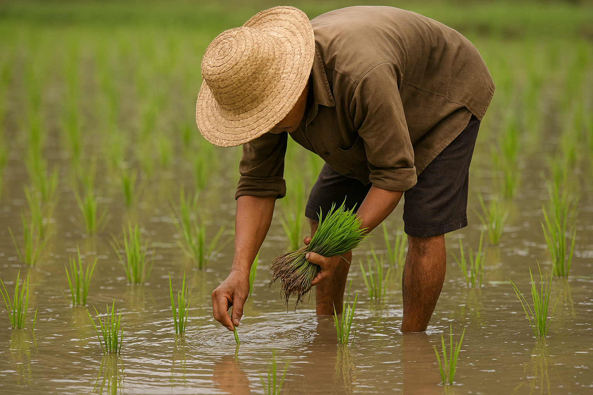
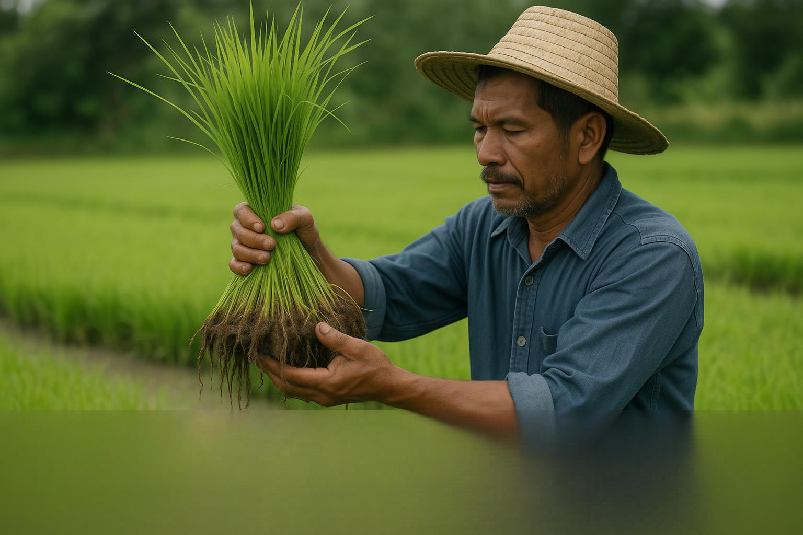

Planting
Transplanting rice seedlings
Planting is done when seedlings are 3 to 4 weeks old. Careful hand transplanting into rows ensures plants grow evenly and access water uniformly.
Seedling age
Seedlings should be 3 to 4 weeks old before transplanting. They should be strong, healthy and well-rooted.

Planting method
Manual transplanting in rows
Ahero farmers uproot seedlings carefully and transplant them in rows. This ensures good spacing, easy water control and simpler weeding.
Procedure
- Transplant by hand.
- Carefully remove seedlings from nursery.
- Plant seedlings in rows.
- Maintain even depth and spacing.

Recommended spacing
Spacing for healthy rice stands
Proper spacing gives each plant access to nutrients, sunlight and water while reducing competition between plants.
20 cm × 20 cm
Standard spacing for good tillering and easy field movement.
20 cm × 15 cm
Tighter spacing for higher plant density and maximum yield when conditions are favorable.

Planting demonstration
Watch farmers transplant rice seedlings and learn how row planting supports strong crop development.